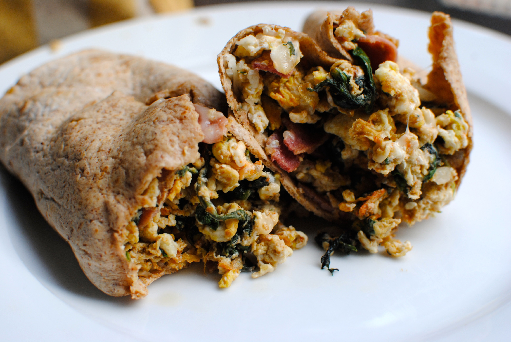

Arizona
Phoenix

Machaca Breakfast Burrito
Arizona shares its southern border with the Mexican state of Sonora, and the food reflects the geography. To combine numerous local favorites, order a deep-fried chimichanga or a breakfast burrito — sometimes called a “burro” — with machaca (dried, spiced beef or pork), green chiles, and eggs, wrapped in a fresh flour tortilla.
Source: The Daily Meal
google map on my website